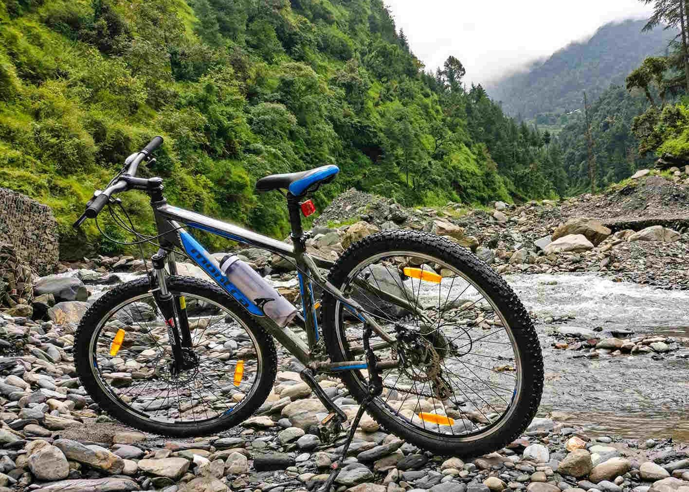
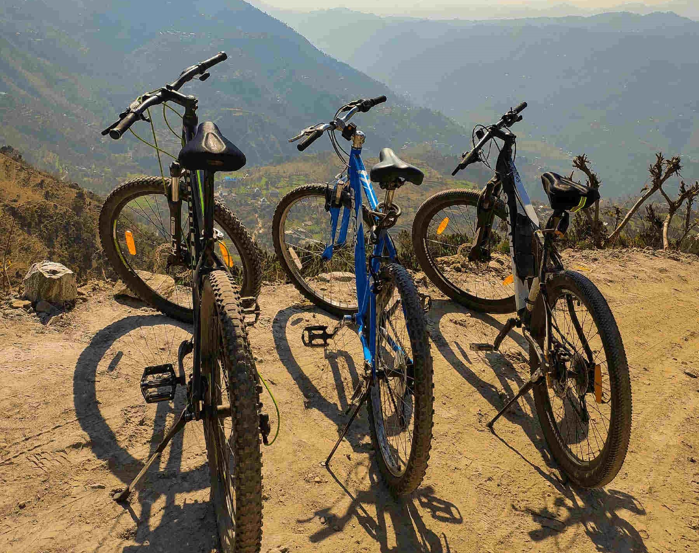
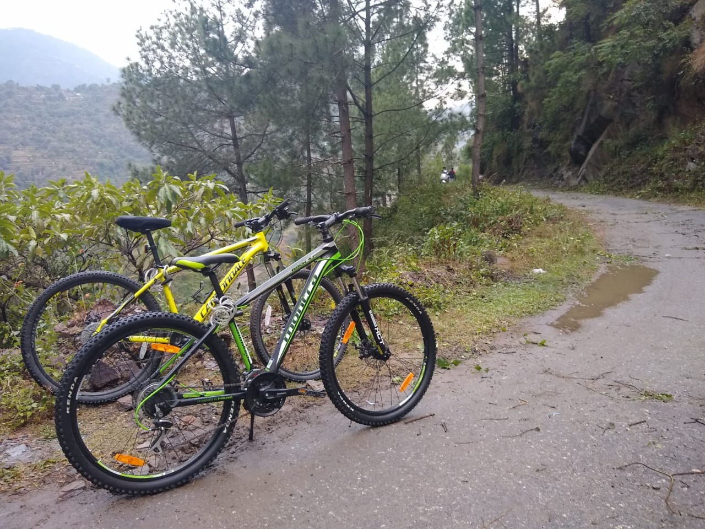
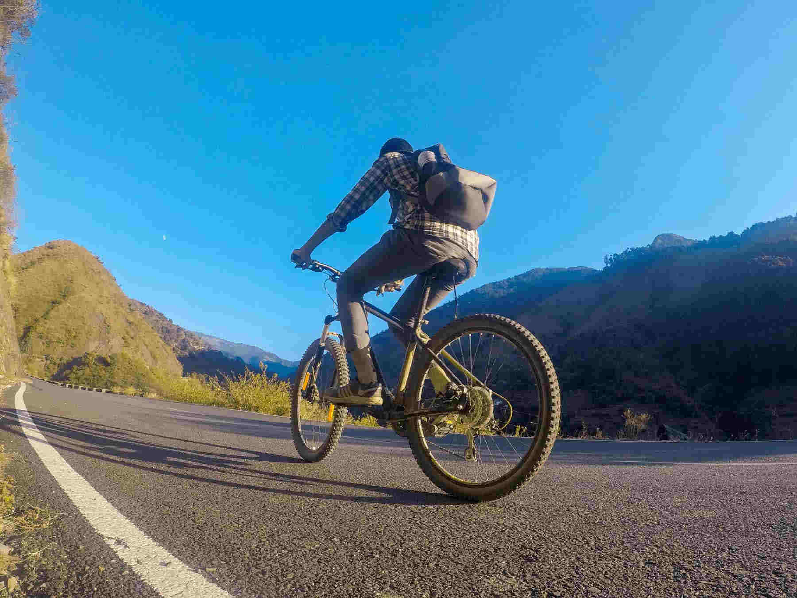
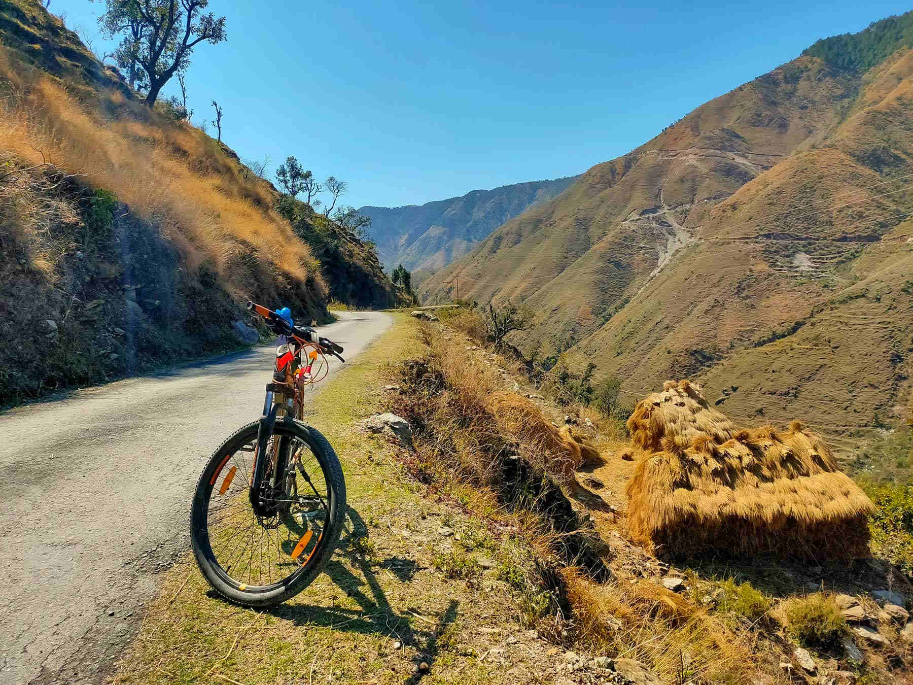
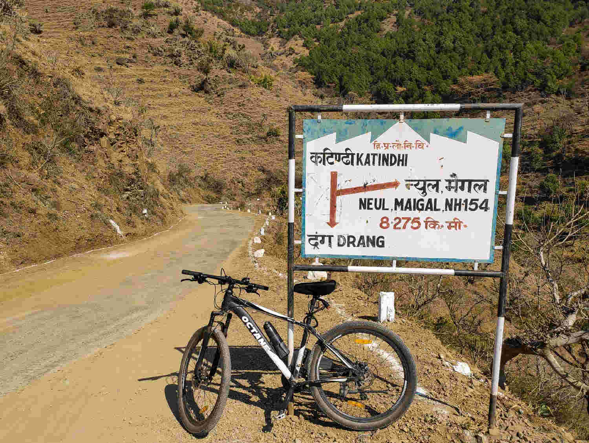
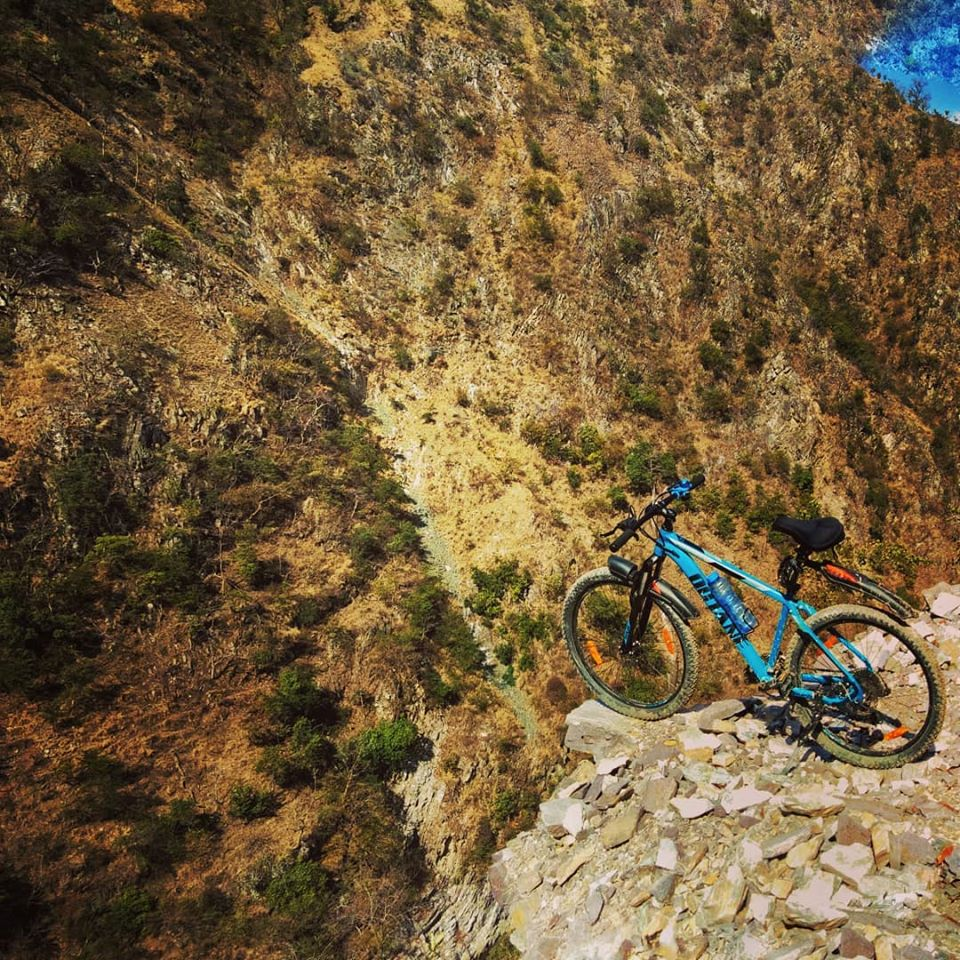

PAST RIDES
LONG RIDES

 Doohki-Pandoh-Bajaura-Kandhi.png)
- Difficulty : Hard
- Distance : 115.4kms
- Elevation : 2256m
Round Trip: IIT Mandi-Doohki-Pandoh-Bajaura-Kandhi-IIT Mandi
A day-long ride with a stretch of 125 km with an approx. 2500 m elevation gain tests a rider's endurance level. Pro level is required to complete the round trip. The toughest part is the climb of 1200m from Bajaura to Kandhi, after 78 km of riding and having gained an elevation of 1300m. Stay hydrated and don't forget to have lunch somewhere in between. A few places for sightseeing are Pandoh Dam, Hanogi Devi Temple & Bridge, the river flowing alongside the road near Aut & Bajaura, the Bajaura valley enroute to Kandhi Pass, the Kamand Valley from Kandhi Pass etc.Backpack: Multi-toolkit, puncture kit, front & back lights (to cross the tunnel near Aut), fruits, especially bananas, dry fruits, and approx. 6 ORS packets.
Trail Link
MEDIUM RIDES
Miyoli Village
The trail is a little off-road. The scenery is magnificent, with a majestic view of the river and hanging bridges, and the difficulty level is easy. This trail connects to Mandi city.Trail Link

 Miyoli village.png)
- Difficulty : Hard
- Distance : 48.3kms
- Elevation : 3207m

 Diana Park.png)
- Difficulty : Moderate
- Distance : 30.1kms
- Elevation : 1131m
Diana Park
Diana Park is situated at the intersection of two valleys. The Dhauladhar range is clearly visible from this point. Scenic beauty enroute Diana which will make you feel nostalgic. It is a moderate to tough-level ride, depending on the rider.Trail Link
South Campus to Baghi Nallah
One has to cross Baghi Nallah on the way to Prashar Lake. It is around 15 km from the campus and the ride is moderate from the south campus.Trail Link

 South Campus to Baghi Nallah.png)
- Difficulty : Moderate
- Distance : 30.1kms
- Elevation : 1131m

 Kamand-Doohki-Gharan-Mandi-Kathindi-Kamand.png)
- Difficulty : Hard
- Distance : 50kms
- Elevation : 1974m
Loop: Kamand-Doohki-Gharan-Mandi-Kathindi-Kamand
A 50 km loop from Kamand via Doohki-Gharan-Mandi. We climb up to Doohki, followed by a steep downhill to Gharan, where we follow the Kullu-Mandi Highway till Mandi and then the Kathindi Climb, which becomes difficult if the rider is exhausted.Trail Link
Parashar Lake
Parashar takes effort from the rider's side. One can divide this ride into 4 segments with stops at Baghi, One Love Cafe, and Bogchi Cafe. One Love Cafe to Bogchi Cafe has a steep climb through the forest. Be careful to refill your water at each stop. No water source is available after one love cafe.Trail Link

- Difficulty : Moderate
- Distance : 35.23kms
- Elevation : 2122m
 Parasher Lake.png)

 Kamand-Kathindi-Drang-Mandi-Skore-Kamand.png)
- Difficulty : Hard
- Distance : 57.36kms
- Elevation : 2070m
Loop: Kamand-Kathindi-Drang-Mandi-Skore-Kamand
After a steep climb to Kathindi, take a right on the Drang road to meet a downhill road. From Drang to Mandi, we need to take the Mandi-Jogindernagar highway, so be cautious while on the highway. Take the exit to Skore from Mandi. It lies around 500m before the Bhuli bridge. The road is paved till Skore, but after that, the real offroad starts with no one around it. There is no help available afterwards. Keep an essential toolkit with you if you are planning to take this road.Trail Link
SHORT RIDES

 South Campus to Kathindi Village.png)
- Difficulty : Easy
- Distance : 11.5kms
- Elevation : 450m
South Campus to Kathindi Village
The total distance up and down is 11.5 km approx., with a steep climb of 450 m.Trail Link
Doohki Village
Doohki village, situated at the top, hosts scenic beauty all around it. The best time to visit this village is in the evening, around sunset, just after a rainy day.Trail Link

- Difficulty : Easy
- Distance : 19kms
- Elevation : 739m
 Doohki Village.png)

- Difficulty : Easy
- Distance : 12.8kms
- Elevation : 722m
 Navlay.png)
Navlay
On a daily basis, it's a simple ride.Don't forget to have tea at the shop in Navlay. One can view Parashar forest from Navlay.Trail Link
Riyagdi with Offroad
If we follow the Uhl river upwards, we will reach Riyagadi village. A lush green valley with an almost flat trail. After Riyagadi starts off road, two options are available to us. Follow the flat off road to reach the end, or take it downhill to reach the river bank. Both are worth taking.Trail Link

- Difficulty : Easy
- Distance : 19.6kms
- Elevation : 1018m
 Riyagadi with offroad.png)